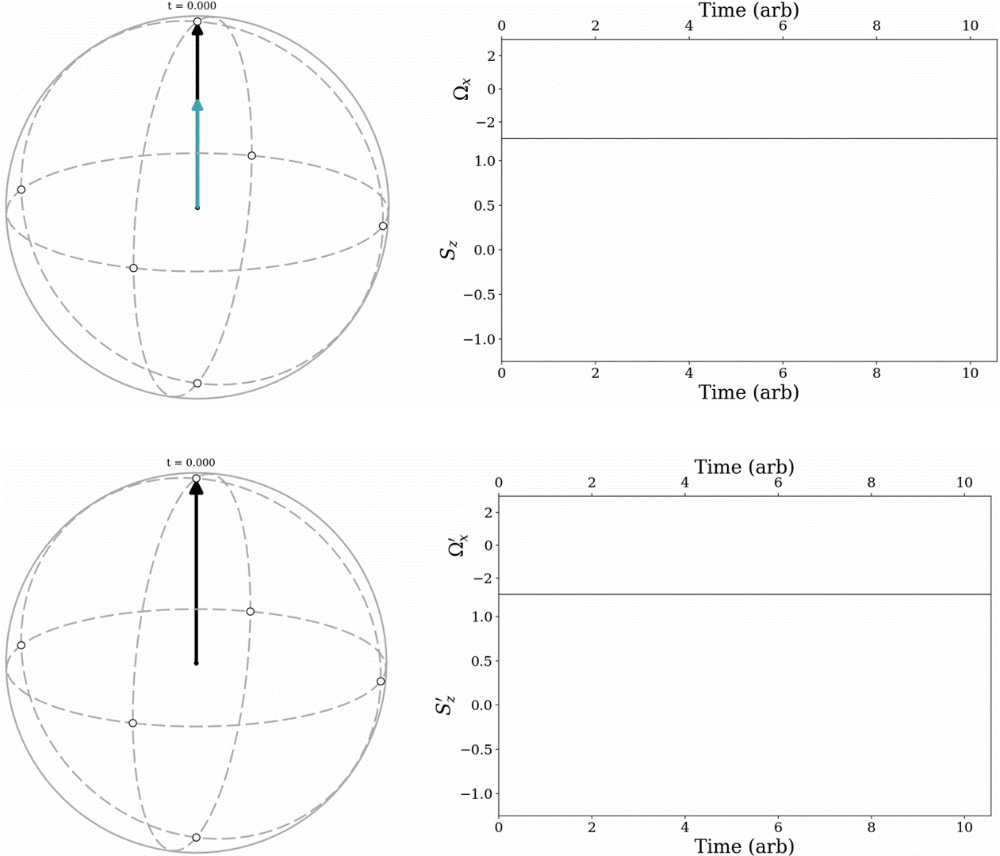
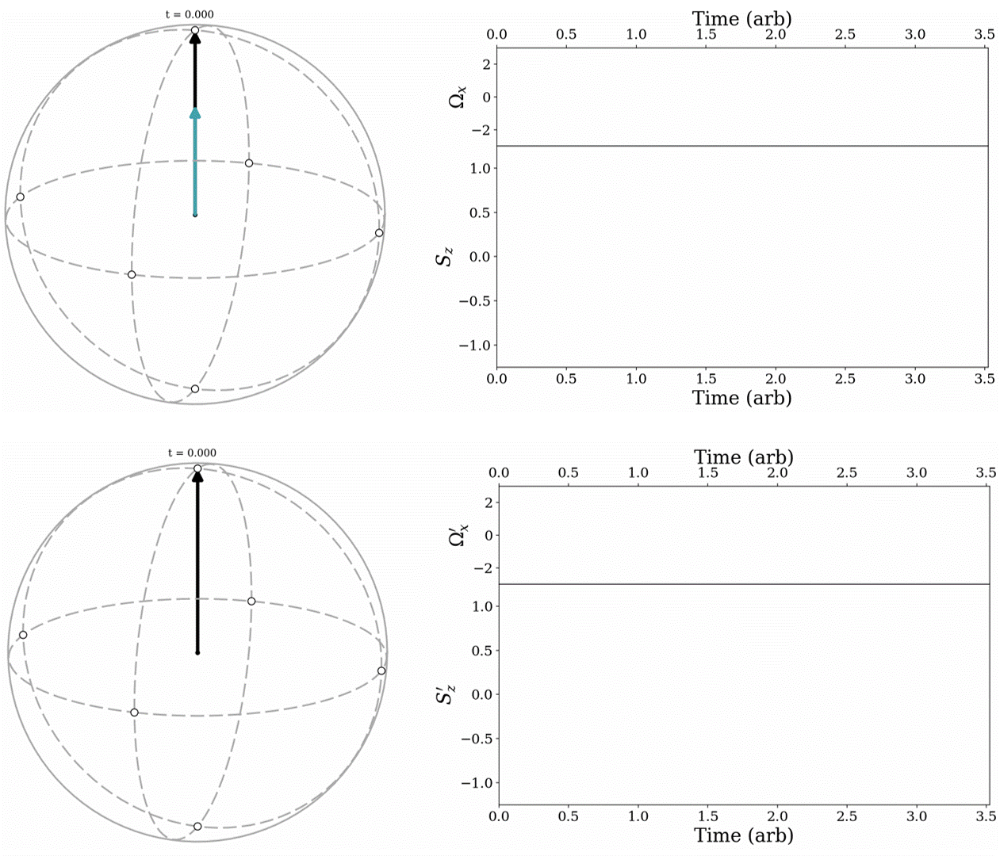

This project is maintained by Charlie-Patrickson in the Luxmoore lab, and was funded by
The two level system, defined by a pair of independent, physically distinguishable states that are capable of existing in any superposition, is the archetypical quantum system. This fundamental concept forms the basis of a nascent quantum technology revolution, spanning technologies from superconducting qubits, trapped ions, neutral atoms, photons, solid state defects and quantum dots to deliver unprecedented new applications beyond the reach of classical technology. A key concept of central importance across these various quantum technology platforms is the lifetime (also known as the coherence time) of the two level system. Beyond this archetypical time frame, the state occupied by the quantum system becomes unknown to the user. Any subsequent attempted operations will have an unknown effect, rendering the system useless. The significance of this becomes more apparent when we consider the specific requirements of quantum technologies. Current quantum computers can manipulate thousands of qubits simultaneously. The goal is to entangle each qubit in the device, such that the state of each individual two-level system is intrinsically dependent on the state of every other two-level system in the device. Achieving this requires a long chain of state dependent operations across each two-level system. Firstly, each qubit must remain in a known state for the duration of this lengthy procedure, but secondly, success means that the loss of a single constituent two-level system could erase the states of every connected qubit in the device. With this in mind it is plain to see why such systems demand long coherence times and exquisite control over the constituent two-level systems.
Whilst there are a multitude of factors affecting the coherence time in two level systems, the choice and execution of the control scheme used can have a transformative effect for any given device. Unfortunately, this is because the coherence time is strongly impacted by a huge range of experimental parameters, covering excitation frequency, transition frequency, excitation power, excitation timing (often requiring sub-nanosecond precision), excitation pulse shape and magnetic field alignment. Suboptimal control, or selection of any one of these parameters, will effectively reduce the probability of executing the desired operation, increasing the required number of repetitions and ultimately the time required to achieve the desired result. Consequently, effective control schemes have been the subject of intensive research efforts for the last 75 years, dating back to the Hahn echo originally used in nuclear magnetic resonance experiments and more recently, magnetic resonance imaging in healthcare. This original example has now been iterated on many times, producing a wide range of control schemes often referred to under the umbrella of "dynamical decoupling" protocols. These control sequences are designed to have a built in tolerance for as many of the above control parameters as possible. They are dynamic, firstly in that they are time dependent, but also in the sense that they only correct incorrect systems. They are decoupling because they reduce interactions with sources of error. The effect is often dramatic, with lifetimes extended by $~$3 orders of magnitude in some cases. They provide an additional functionality in quantum sensing applications, where can be used to select the frequency response of the sensor. The choice of dynamical decoupling protocols have proliferated from Hahn echo, Car-Purcell-Meiboom-Gill (CPMG), XY8, sinusoidally modulated, always rotating, and tailored (SMART), Spin Lock, continuous concatenated dynamical decoupling. Each of these is designed to optimise coherence times in two level systems, however the implementation of each sequence is different, the results are different and the underlying mechanisms can often be extremely challenging to interpret.
This tutorial aims to equip the reader with the understanding and skills necessary to implement and interpret results produced using these techniques. Throughout the tutorial we will refer to an example two level system composed of two spin states.
We will begin with a recap of the underlying principles behind quantum spin in section \ref{}. To provide a grounded example, in section \ref{} we will analyse and interpret an example Hamiltonian from a two level system. It's common in the field to switch between reference frames to reduce the resulting spin dynamics into a more digestable form. Eigenstates and eigenvectors. In section \ref{} we will go through a worked example of such a reference frame transformation. To provide a more intuitive understanding of dynamical decoupling, in section \ref{} we will outline and visualise the pulse sequences, resulting spin dynamics, and typical experimental outputs from a selection of dynamical decoupling protocols. Quantum technology often uses different terms for coherence times interchangeably, we will clarify the meaning on these in section \ref{}. Typical associated analysis and interpretation techniques will be covered in section \ref{}. Finally, in section \ref{} we will guide the reader through common pitfalls and sources of potential confusion.
The Bloch sphere provides an intuitive way to visualize the state of a two-level system, and functions as a primary tool throughout this tutorial. To understand how this information is represented, we first define the two level system $|\Psi\rangle$ and its two constituent levels, $|0\rangle$ and $|1\rangle$. The states $|0\rangle$ and $|1\rangle$ are separated in energy by $\omega_0$. $|\Psi\rangle$ can occupy $|0\rangle$, $|1\rangle$, or a superposition of the two, $Z_0|0\rangle + Z_1|1\rangle$. Here, $Z_i$ represents a complex probability amplitude, $Z_i = |Z_i|e^{i\phi_i}$, and encodes the phase, $\phi_i$, and magnitude, $|Z_i|$, of each state into $|\Psi\rangle$. Two things precipitate out this definition. First, we can define a constant phase offset, $e^{i\phi_0}$, that acts equally across $|0\rangle$ and $|1\rangle$, so that $|\Psi\rangle = e^{i\phi_0} (|Z_0| |0\rangle + |Z_1|e^{i(\phi_1 - \phi_0)}|1\rangle)$. This global phase has no impact on the resulting spin dynamics and is discarded. Instead we define $\phi = \phi_1 - \phi_0$, which describes the relative phase between $|0\rangle$ and $|1\rangle$. Second, as a two level system, the probability of a measurement on $|\Psi\rangle$ returning either $|0\rangle$ or $|1\rangle$ must be unity, so that $\langle\Psi|\Psi\rangle = |Z_0|^2 + |Z_1|^2 = 1$. This equation describes a circle, where the angle $\theta$ between $|Z_0|$ and $|Z_1|$ describes the relative populations of $|0\rangle$ and $|1\rangle$ at any point in time. As $\phi$ and $\theta$ describe a pair of angles, they define a unit sphere. Each single point on this sphere maps a unique state $|\Psi\rangle$, characterized by a relative phase between $|0\rangle$ and $|1\rangle$ using the in plane angle $\phi$, and the relative $|0\rangle$ and $|1\rangle$ populations, via the polar angle $\theta$.
The ability to arbitrarily locate and retain $|\Psi\rangle$ on this sphere, thereby creating any arbitrary superposition of $|0\rangle$ and $|1\rangle$, underpins advanced quantum protocols. Proposed control schemes can be understood using the equation of motion, (the effects of damping are considered in Section \ref{}), \begin{equation}{\label{Eq_of_motion}} {\dot{S}} = {\Omega_{eff}}(t)\times {S}. \end{equation}
In this framework, $|\Psi\rangle$ is represented by a vector ${S}$, that runs from the origin to a point $(\psi, \ \theta)$ on the unit sphere. ${\Omega_{eff}}(t)$ describes an effective field interacting with the two level system, and is often defined in the literature using a Hamiltonian, $H = {\Omega_{eff}}.{\sigma}$, where ${\sigma}$ represent the Pauli matrices. This means the three dimensional effective field vector, ${\Omega_{eff}}(t)$, maps directly to the Pauli matrices ${\sigma}$. This description reduces the evolution of $|\Psi\rangle$ to a vector cross product ${\dot{S}}$; in other words, evolution of our two level system $|\Psi\rangle$ depends on whether or not the effective field vector ${\Omega_{eff}}(t)$ aligns with the initial state ${S}$. Throughout this article we will use Hamiltonians, $H$, to describe the interactions of our model two level system, and then consider the corresponding effective field ${\Omega_{eff}}(t)$ to visualise dynamics on the Bloch sphere.
In Fig. \ref{Fig1}a) we illustrate Eq. \ref{Eq_of_motion} by calculating the dynamics of different effective fields, ${\Omega_{eff}}(t)$ on the initial state, $|\Psi_i\rangle = |0\rangle$. This corresponds to ${S_i} = (0, 0, 1) = \hat{z}$ in the Bloch representation and typically represents the system immediately after the initialization step of an experiment. We consider three effective field vectors, ${\Omega_{eff}} = \Omega \hat{x}$ (blue), ${\Omega_{eff}} = \Omega \hat{y}$ (orange) and ${\Omega_{eff}} = \Omega \hat{z}$ (green). ${\Omega_{eff}} = \Omega \hat{x}$ (blue) and ${\Omega_{eff}} = \Omega \hat{y}$ (orange) are perpendicular to the initial state ${S}= \hat{z}$, so that ${\dot{S}} \neq 0$ leading to a rotation around their corresponding axes and therefore a change in ${S}$. When ${\Omega_{eff}} = \Omega \hat{z}$, ${\dot{S}} = 0$ and ${S}$ remains in ${S_i} = \hat{z}$. This describes an eigenstate, referred to in the literature in myriad contexts, it describe a state where the effective field ${\Omega_{eff}}(t)$ and therefore the associated Pauli operator ${\sigma}$, produces no measurable change in ${S_i}$.
All physical two level systems have an intrinsic effective field defined by the systems transition frequency, $\omega_0$. This frequency is referred to as Bloch precession, or Larmor precession in spin systems. It is associated with the $\sigma_z$ Pauli operator, to define the Bloch precession Hamiltonian $H_0 = \omega_0\sigma_z$. In the Bloch representation, this corresponds to an effective field ${\Omega_{eff}} = {\Omega_0} = \omega_0 \hat{z}$, which has eigenstates of $|0\rangle$ and $|1\rangle$. In Fig. \ref{Fig1}b) we illustrate the effect of the Bloch precession field ${\Omega_0} = \omega_0 \hat{z}$ on the initial states ${S_i} = (1, 0 ,0) = \hat{x}$ (left), ${S_i} = (0, 1 ,0) = \hat{y}$ (middle) and ${S_i} = (0, 0 ,1) = \hat{z}$ (right). For ${S_i}= \hat{x}$ and ${S_i}= \hat{y}$, ${\dot{S}} \neq 0$, causing the Bloch vector to rotate in the $xy$ plane around the $z$ axis. However, applying ${\Omega_0} = \omega_0 \hat{z}$ to ${S_i} = (0, 0 ,1) = \hat{z}$ produces $\dot{{S}} = 0$, describing an eigenstate.
Crucially, all two level systems undergo Bloch precession; any attempt to manipulate the Bloch vector must operate coherently with this ubiquitous rotation. Now, attempting to use a DC field for the drive, $H_{Drive} = \Omega \sigma_{x}$, or ${\Omega_{drive}} = \Omega\hat{x}$ in the Bloch representation, tilts the precession axis, so that ${\Omega_{eff}} = {\Omega_0} + {\Omega_{Drive}} = \omega_0 \hat{z} + \Omega\hat{x}$. This can lead to state mixing, resulting in complex dynamics \cite{}. Instead, coherent control is achieved using AC fields.A Rabi oscillation continuously drives a transition between $|0\rangle$ and $|1\rangle$ by using an AC field. The time it takes to drive one complete cycle from $|0\rangle \rightarrow |1\rangle \rightarrow |0\rangle$ defines the Rabi frequency, $\Omega$. This forms the bedrock of all coherent control schemes; precise measurement of the Rabi frequency informs the experimentalist how long to apply an AC field for to achieve a given rotation of the Bloch vector. In most systems the Rabi frequency is linearly dependent on the amplitude of the AC driving field; characterizing this relationship forms an essential calibration step.
Driving a continuous, coherent rotation of the spin vector ${S}$ requires ${\dot{S}} \geq 0$ (or alternatively ${\dot{S}} \leq 0$) at any single point in time. Achieving this whilst the system undergoes Bloch precession requires an AC drive, so that $H_{Rabi} = \Omega \cos(\omega_0t) \sigma_{x}$, or the field ${\Omega_{Rabi}} = \Omega \cos(\omega_0t) \hat{x}$ in the Bloch representation. Matching the drive frequency with the Bloch precession, $\omega = \omega_0$ represents a resonance condition, where ${\Omega_{Rabi}}$ is phase-locked with the precessing Bloch vector ${S}$. This fulfills the ${\dot{S}} \geq 0$ requirement, so that the effective field ${\Omega_{Rabi}}$ nudges the Bloch vector across the Bloch sphere with each $\omega$ period.

To calculate the Bloch vector dynamics during a Rabi oscillation we use the Hamiltonian, $H = H_0 + H_{Rabi} = \tfrac{1}{2}\omega_0 \sigma_z + \Omega \cos(\omega_0t) \sigma_x$. This is described by the effective field ${\Omega_{eff}} = {\Omega}_0 + {\Omega}_{Rabi} = \omega_0 \hat{z} + \Omega \cos(\omega_0t) \hat{x}$ in the Bloch representation. We choose the initial state $|\Psi_i\rangle = |0\rangle$, described by ${S} = \left (0, 0, 1 \right) = \hat{z}$ on the Bloch sphere. In Fig. \ref{Fig2}a we illustrate the resulting Bloch vector trajectory, plotting the z component of the Bloch vector, $S_z$, as a function of time. We see that the vector cycles between $\hat{z}$ and $-\hat{z}$, indicating continuous transitions between $|0\rangle \leftrightarrow |1\rangle$. The frequency of this oscillation defines the Rabi frequency, $\Omega$. In Fig. \ref{Fig2}b, the lower panel provides a closeup of the blue highlighted region in Fig. \ref{Fig2}a, while the upper panel plots ${\Omega}_{Rabi}$ as a function of time. The closeup reveals a periodic wiggle in $S_z$, which oscillates at the Rabi drive frequency $\omega_0$. This is because although ${\dot{S}} \geq 0$, it is not constant over a single Bloch precession period. When $\Omega\cos(\omega_0t) \sigma_x = 0$, ${\dot{S}} = 0$. This is depicted on the leftmost inset Bloch sphere for $\omega_0t = 4.5\pi$. When $\Omega\cos(\omega_0t) \sigma_x = \Omega \sigma_x$, ${\dot{S}} = \Omega \hat{x} \times {S}$. This is shown on the rightmost inset Bloch sphere, half a period later at $\omega_0t = 5\pi$. In most scenarios $\omega_0 \gg \Omega$, making the wiggle effect negligible.
The Bloch sphere representation reveals two simultaneous oscillations; a fast oscillation around $z$ due to the Bloch precession term ${\Omega_0} = \omega_0 \hat{z}$, and a slower oscillation around $x$ due to the Rabi drive ${\Omega_{Rabi}} = \Omega \cos(\omega_0t) \hat{x}$. The constant presence of a fast Bloch precession term can make it challenging to interpret more complex interactions. Consequently, two level dynamics are often described using the interaction picture. In this framework, the Hamiltonian $H$ is first transformed into a rotating reference frame and then applied to the two level system $|\Psi\rangle$. In its simplest form, the reference frame is defined by an axis of rotation, and a frequency. To observe a frame that rotates with the Bloch precession, we choose the $z$-axis, and the Bloch precession frequency, $\omega_0$. In this frame, the effects of Bloch precession are no longer observed in the Bloch vector, as the rotation is implicit in the reference frame. To apply this transformation, we use the Hamiltonian, $H_0 = \tfrac{1}{2}\omega_0 \sigma_z$, to construct a transformation matrix $U = e^{iH_0t}$. This is used to calculate the rotating frame Hamiltonian $H^{\prime} = UHU^{\dagger} + i\dot{U}U^{\dagger}$. Applying this treatment to the Rabi oscillation Hamiltonian, $H = \tfrac{1}{2}\omega_0 \sigma_z + \Omega \cos(\omega_0t) \sigma_x$, we find; \begin{align}\label{Rabi_Transformation} H^{\prime} &= UHU^{\dagger} + i\dot{U}U^{\dagger} \nonumber \\ &= e^{i\tfrac{1}{2}\omega_0 t \sigma_z} \left( \tfrac{1}{2}\omega_0 \sigma_z + \Omega \cos(\omega_0 t) \sigma_x \right) e^{-i\tfrac{1}{2}\omega_0 t \sigma_z} + i \tfrac{d}{dt}e^{i\tfrac{1}{2}\omega_0 t \sigma_z} e^{-i\tfrac{1}{2}\omega_0 t \sigma_z} \nonumber \\ &= \left(\cos(\tfrac{1}{2}\omega_0 t) + i \sin(\tfrac{1}{2}\omega_0 t)\sigma_z\right) \left( \tfrac{1}{2}\omega_0 \sigma_z + \Omega \cos(\omega_0 t) \sigma_x \right)\left(\cos(\tfrac{1}{2}\omega_0 t) - i \sin(\tfrac{1}{2}\omega_0 t)\sigma_z\right) - \tfrac{1}{2}\omega_0 \sigma_z \nonumber\\ &=\tfrac{1}{2}\Omega \sigma_x^{\prime}, \end{align} where $^{\prime}$s describe operators in the rotating frame, we have applied the rotating wave approximation, so that fast terms oscillating at $2\omega_0$ are disregarded, and have assumed that the Rabi drive frequency matches the Bloch precession frequency, $\omega_0$. A complete derivation is included in Supplementary Note \ref{}. Here the Bloch precession term $H_0 = \tfrac{1}{2}\omega_0 \sigma_z$ is negated by the rotating frame, and the AC Rabi drive term $H_{Rabi} = \Omega \cos(\omega_0t) \sigma_x$ reduces to a DC component $H_{Rabi}^{\prime} = \tfrac{1}{2}\Omega \sigma_x$. Returning to the Bloch sphere representation, this corresponds to an effective field along $x$, so that ${\Omega_{eff}}^{\prime} = {\Omega_{Rabi}}^{\prime} = \tfrac{1}{2}\Omega \hat{x}^{\prime}$.
To calculate the Bloch dynamics in this reference frame, the initial Bloch state must also undergo the transformation. However, in this case, it remains unchanged $|\Psi_i\rangle^{\prime} = U|\Psi\rangle = |\Psi_i\rangle = |0\rangle$, so ${S_i} = \left (0, 0, 1 \right) = \hat{z}^{\prime}$ on the Bloch sphere. In Fig. \ref{Fig2}c, we plot the $z$ component of the Bloch vector in this frame, $S_z$, as a function of time. In the absence of the Bloch precession term, ${\Omega_{eff}^{\prime}}$ drives a coherent rotation around the $x^{\prime}$ axis, effectively reconstructing the two level dynamics presented above in Fig. \ref{Fig2}a. An expanded view of the highlighted region is presented in the lower panel of Fig. \ref{Fig2}c, with the corresponding drive field ${\Omega_{eff}^{\prime}}$ plotted in the upper panel. Here the wiggle evident in Fig. \ref{Fig2}b is absent. This is a consequence of removing the time dependence in ${\Omega_{eff}^{\prime}}$.
Whilst the Rabi oscillation is designed to continuously drive the two level system between $|0\rangle \leftrightarrow|1\rangle$, many advanced quantum protocols use pulses to apply targeted rotations to the Bloch vector. These pulses are typically described using the required rotation angle on the Bloch sphere; a rotation of $\pi$ is a $\pi$-pulse, a rotation of $\pi/2$ is a $\pi/2$-pulse (see inset, right in Fig. \ref{Fig2}d for an example $\pi/2$-pulse). Identifying the correct pulse duration for these rotations requires precise knowledge of the Rabi frequency, making Rabi oscillations an essential characterization tool across quantum technologies.

| Sample: |
A simple and well used pulse sequence is the Ramsey protocol. The scheme characterizes interactions governed by the $\sigma_z$ operator, or alternatively effective fields along the $z$-axis in the Bloch sphere representation. These sources perturb the natural Bloch precession frequency, and are therefore typically associated with unwanted noise. The Ramsey pulse sequence is illustrated in the upper panel of Fig. \ref{3}a. The scheme takes an initial state $|\Psi\rangle = 0$, corresponding to ${S_i} = \left (0, 0, 1 \right) = \hat{z}$ on the Bloch sphere, and applies a $\pi/2$-pulse, followed by a delay period, $\tau$, before a final $\pi/2$ pulse. The $\pi/2$ pulses shuttle the Bloch vector to and from the $xy$ plane, whilst the delay $\tau$ enables a period of bare interaction with the local environment in between.
We apply the sequence using the Hamiltonian $H = H_0 + H_{Ramsey} = \tfrac{1}{2}\omega_0 \sigma_z + \Omega(t) \cos(\omega t) \sigma_x$, corresponding to an effective field of ${\Omega_{eff}} = {\Omega_0} + {\Omega_{Ramsey}} = \tfrac{1}{2}\omega_0 \hat{z} + \Omega(t) \cos(\omega t) \hat{x}$, and plot the resulting $z$ component of the Bloch vector trajectory, $S_z$, in the lower panel of Fig. \ref{Fig3}a. During the $\pi/2$ pulses we set $\Omega(t) = \Omega$ for a pulsewidth of $T = \frac{\pi}{2\Omega}$, and set $\Omega(t) = 0$ during the delay, $\tau$. We assume a resonant drive, where $\omega = \omega_0$. After the initial $\pi/2$-pulse, $S_z = 0$, placing the Bloch vector in the $xy$ plane. The left inset illustrates the trajectory on the Bloch sphere, revealing the Bloch precession produced by ${\Omega_0} = \omega_0 \hat{z}$, also evident from the wiggle in $S_z$. In the delay period $\tau$, ${\Omega_{Ramsey}} = 0$ and the Bloch vector remains in the $xy$ plane precessing under ${\Omega_0} = \omega_0 \hat{z}$. This is evidenced on the right inset Bloch sphere, which also plots the trajectory under the final $\pi/2$-pulse. Note that typically the experimental waveform used for the second $\pi/2$-pulse is a continuation of the first $\pi/2$-pulse. In other words, the two pulses remain phase coherent across the delay period $\tau$.
In Fig. \ref{Fig3}b we repeat the analysis in a rotating reference frame that tracks with the Bloch precession, ${\Omega_0} = \tfrac{1}{2}\omega_0 \hat{z}$. The rotating frame Hamiltonian is $H^{\prime} = \tfrac{1}{2}\Omega(t) \sigma_x^{\prime}$, and the pulse and delay timings remain unchanged from the lab frame. The upper panel plots the $x^{\prime}$ component of the rotating frame drive field ${\Omega_{ramsey}^{\prime}}$ as a function of time, whilst the lower panel plots the rotating frame $z^{\prime}$ component of the Bloch vector, $S_z^{\prime}$. Under a resonant drive field, where $\omega = \omega_0$, the Bloch vector remains static during the delay period $\tau$. This is evidenced on the inset Bloch spheres, and is a consequence of the reference frame being phase locked with the Bloch precession.
However, real two level systems are constantly exposed to sources of noise, causing the Bloch precession/ two level transition frequency, $\omega_0$ to fluctuate. Potential sources include local magnetic fields in spin systems, such as other nearby spins, or fluctuating electric fields in optical systems, due to laser noise. Consequently, it can be more instructive to define the reference frame with respect to the drive frequency $\omega$, as it represents a robust reference that is precisely controlled by the observer. This definition introduces an additional term, $H_{detuning}^{\prime} = \tfrac{1}{2}(\omega_0 - \omega)\sigma_z^{\prime}$, in the rotating frame Hamiltonian, $H^{\prime}$ (see Supplementary Note \ref{} for the full derivation). The corresponding effective field is ${\Omega_{detuning}^{\prime}} = (\omega_0 - \omega)\hat{z}^{\prime}$. Nonzero ${\Omega_{detuning}^{\prime}}$ produces an additional rotation around $z^{\prime}$, causing the reference frame to lose track of the noisy Bloch precession.
The detuning between the Bloch precession and the drive frequency can be measured by sweeping the Ramsey delay time, $\tau$\cite{}. This sequence is illustrated in Fig. \ref{Fig3}e using the rotating frame Hamiltonian, $H^{\prime} = H_{detuning}^{\prime} + H_{Ramsey}^{\prime} = \tfrac{1}{2}(\omega_0 - \omega)\sigma_z^{\prime} + \tfrac{1}{2}\Omega(t) \sigma_x^{\prime}$. The $z^{\prime}$ component of the Bloch vector trajectory is plotted in the main panel for a range of delay times, $\tau$. As $\tau$ increases, the final $S_z^{\prime}$ projection oscillates. This reflects the $\tau$-dependent rotation of the Bloch vector in the $x^{\prime}y^{\prime}$-plane due to ${\Omega_{detuning}^{\prime}}$, as illustrated on the inset Bloch spheres.
Uncontrolled rotations of the Bloch vector, like those produced by ${\Omega_{detuning}^{\prime}}$, can dramatically alter the intended outcome of a control sequence. Many schemes are designed to mitigate these effects, and fall under the description of dynamical decoupling techniques. This name reflects the carefully optimised, dynamic rotations of the Bloch vector that are designed to decouple two level systems from noise. In the following we provide an overview of some of the most common approaches. Note that the Bloch vector dynamics are all calculated in a reference frame that rotates around the $z$-axis, tracking the drive field frequency, $\omega$.
The Hahn echo is an archetypal example of dynamical decoupling. It has a similar structure to the Ramsey pulse sequence, but has an additional $\pi$-pulse in middle of the delay period, $\tau$. The $\pi$-pulse flips the Bloch vector around the $x$ axis, so that the uncontrolled rotations are reversed during the second delay period $\tau$. This returns the Bloch vector to its initial position after the first $\pi/2$-pulse. It remains a well used scheme for its relative simplicity, and its ability to characterize noise sources. This sequence is illustrated in the upper panel of Fig. \ref{Fig4}a. We use the Hamiltonian $H^{\prime} = H_{detuning}^{\prime} + H_{Hahn Echo}^{\prime} = (\omega_0 - \omega)\sigma_z^{\prime} + \tfrac{1}{2}\Omega(t) \sigma_x^{\prime}$, and choose a $\pi/2$-pulse ($\pi$-pulse) pulsewidth of $T = \frac{\pi}{2\Omega}$ ($T = \frac{\pi}{\Omega}$), during which $\Omega(t) = \Omega$. We set $\Omega(t) = 0$ during the delay periods, $\tau$.
The $S_z^{\prime}$ component of the Bloch vector is plotted in the lower panel of Fig. \ref{Fig4}a for a range of ${\Omega_{detuning}^{\prime}}$ values. This situation is typical in ensembles of two level systems, where inhomogeneous local noise produces a distribution of Bloch precession frequencies $\omega_0$ across the ensemble. The inset Bloch spheres illustrate the trajectories before and after the middle $\pi$-pulse. During the first $\tau$ interval, the Bloch vectors fan out in the $x^{\prime}y^{\prime}$-plane due to the different rotation rates associated with each ${\Omega_{detuning}^{\prime}}$ value. The middle $\pi$-pulse flips the Bloch vectors around the $x^{\prime}$-axis. This reverses the rotation rates, so that at the end of the second $\tau$ interval, the ensemble is refocused back where it began on the Bloch sphere after the initial $\pi/2$-pulse. Despite the range of uncontrolled rotations during the $\tau$ interval, each Bloch vector completes the sequence in the target state $|\Psi_f\rangle^{\prime} = |0\rangle$, corresponding to ${S_f}^{\prime} = (0, 0, 1) = \hat{z}^{\prime}$ in the Bloch representation.
This idea of using a $\pi$-pulse to refocus unwanted rotations is extended in the CPMG sequence.
A comprehensive suite of pulsed control techniques exists\cite{}. However their ability to extend the lifetime of a two level system is limited by fundamental lifetimes (see T2* and T2), and long sequences require precise pulse area calibration\cite{}. An alternative is continuous control schemes, where the applied control field is corrects the Bloch vector continuously. We now introduce some of those ideas.
The spin lock sequence applies an AC field parallel to the Bloch vector and resonant with the Bloch precession\cite{}. In this configuration the two level system becomes "locked" to the AC field, forming an eigenstate. Systems can be retained in this state for a very long time, making the spin lock a useful tool for slow operations, such as the detection of very weak fields in quantum sensing\cite{}, entangling gates between weakly coupled systems\cite{}, or as an extended idling state\cite{}. To execute the scheme, a $\pi/2$-pulse first rotates the Bloch vector from the initial state ${S_i} = \left (0, 0, 1 \right) = \hat{z}$ on the Bloch sphere, to the $y$-axis, ${S} = \left (0, 1, 0 \right) = \hat{y}$. The resonant AC field is immediately turned on, and applied parallel to the Bloch vector along $y$. A final $\pi/2$-pulse projects the Bloch vector back onto the $z$-axis for readout.
To illustrate the scheme we start with the lab frame Hamiltonian, $H_{SpinLock} = H_{Detuning} + H_{\pi/2}(t) + H_{Drive}(t)= \tfrac{1}{2}\omega_0\sigma_z + \Omega_{\pi/2} \cos (\omega t) \sigma_x + \Omega_{Drive} \cos (\omega t + \pi/2) \sigma_y$. We transform the Hamiltonian to a reference frame that rotates with the Bloch vector at the drive field frequency, $\tfrac{1}{2}\omega \sigma_z$, where $H_{SpinLock}^{\prime} = H_{Detuning}^{\prime} + H_{\pi/2}^{\prime}(t) + H_{Drive}^{\prime}(t)= \tfrac{1}{2}(\omega_0 - \omega)\sigma_z + \tfrac{1}{2}\Omega_{\pi/2}(t) \sigma_x + \tfrac{1}{2}\Omega_{Drive}(t) \sigma_y$ (see Supplementary Note \ref{} for the full derivation). The sequence is visualized in the upper panel of Fig. \ref{Fig4}c, with $\Omega_{\pi/2}^{\prime}(t)$ and $\Omega_{Drive}^{\prime}(t)$ plotted as a function of time. During the $\pi/2$ pulses we set $\Omega_{\pi/2}(t) = \Omega$ for a pulsewidth of $T = \frac{\pi}{2\Omega}$, with $\Omega_{\pi/2}(t) = 0$ otherwise. Conversely, $\Omega_{Drive}(t) = \Omega$ in between the $\pi/2$-pulses, and $\Omega_{Drive}(t) = 0$ during $\pi/2$-pulses.
The corresponding $S_z^{\prime}$ Bloch vector dynamics are presented in the lower panel of Fig. \ref{Fig4}c. Results are presented for both a drive field resonant with the Bloch precession, $\omega = \omega_0$, and a detuned drive, $\omega \neq \omega_0$. The first $\pi/2$-pulse places the Bloch vector in the $x^{\prime}y^{\prime}$-plane, so that $S_z^{\prime} = 0$. The drive field ${\Omega_{Drive}^{\prime}}$ then locks the system to the $y^{\prime}$-axis, where the detuned Bloch vector starts to precess around ${\Omega_{Drive}^{\prime}}$. This is illustrated on the left inset Bloch sphere. As both resonant and detuned Bloch vectors remain local to the $y^{\prime}$-axis, the final $\pi/2$-pulse effectively projects both systems onto the $z^{\prime}$-axis. This is illustrated on the right inset Bloch sphere. Note that, for the ${\Omega_{Drive}^{\prime}}$ to correct the detuned Bloch vector, ${\Omega_{Drive}^{\prime}}$ must be faster than the detuning rate $\omega_0 - \omega$. Finally, whilst the spin lock sequence is incredibly effective at pinning the Bloch vector to the Bloch sphere, in most implementations the state must remain fixed, which can limit the application.
Where the spin lock pins the Bloch precession to the drive frequency, $\omega$, continuous concatenated dynamical decoupling schemes pin the Bloch vector to a Rabi frequency, $\Omega$. This means CCD schemes operate similarly to a Rabi oscillation, continuously driving the system between $|0\rangle \leftrightarrow |1\rangle$. The locked Rabi frequency enables precise control of the Bloch vector with dramatically enhanced coherence times\cite{}, and has been leveraged in high fidelity control schemes\cite{}, a suite of quantum sensing applications\cite{}, and for multipartite entangling operations\cite{}.
CCD is typically applied using an amplitude\cite{} or phase\cite{} modulated driving field. Here we focus on phase modulated CCD, described by the lab frame Hamiltonian, \begin{equation}\label{Lab_CCD} H = H_0 + H_{CCD} = \tfrac{1}{2}\omega_0 \sigma_z + \Omega \cos\left(\omega t - \tfrac{2 \epsilon_m}{\Omega}\sin(\omega_m t)\right). \end{equation} The dynamics produced by $H_{CCD}$ are simplified by using the interaction picture. Moving to a reference frame that rotates with the Bloch vector at the drive frequency, $\tfrac{1}{2}\omega \sigma_z$, $H$ transforms into $H^{\prime} = \tfrac{1}{2}(\omega_0 - \omega)\sigma_z^{\prime} + \tfrac{1}{2}\Omega \sigma_x^{\prime} - \epsilon_m \sin(\omega_m t)\sigma_y^{\prime}$ (a full derivation is provided in Supplementary Information \ref{}). Here $H_{CCD}$ drives a Rabi oscillation via the DC $x^{\prime}$ component, $\tfrac{1}{2}\Omega \sigma_x^{\prime}$, but also includes an AC $y^{\prime}$ component, $- \epsilon_m \sin(\omega_m t)\sigma_y^{\prime}$. If $\omega_m = \Omega$, this AC modulation locks the Rabi frequency to $\omega_m$, and stabilizes the Bloch vector against drive deviations if $(\omega_0 - \omega)\neq0$. This result is not immediately apparent. The interaction can be further simplified by transforming $H^{\prime}$ into a second reference frame that rotates with the Bloch vector Rabi oscillation around $x^{\prime}$, at the AC modulation frequency $\omega_m$. Here $H$ reduces to, \begin{equation}\label{Doubly_Rotating_CCD} H^{\prime \prime} = \tfrac{1}{2}(\Omega - \omega_m)\sigma_{x}^{\prime \prime} + \tfrac{1}{2}\epsilon_m \sigma_z^{\prime \prime}. \end{equation}
The effective field describes a DC field along $z^{\prime\prime}$, ${\Omega_{eff}^{\prime \prime}} = \tfrac{1}{2}(\Omega - \omega_m)\hat{x}^{\prime \prime} + \tfrac{1}{2}\epsilon_m \hat{z}^{\prime \prime}$. If the modulation frequency matches the Rabi frequency, $\omega_m = \Omega$, then ${\Omega_{eff}^{\prime \prime}} = \tfrac{1}{2}\epsilon_m \hat{z}^{\prime \prime}$. Here, ${\Omega_{eff}^{\prime \prime}}$ is aligned with the state described by, ${S^{\prime\prime}} = (0, 0, 1) = \hat{z}^{\prime \prime}$.
To interpret the state ${S^{\prime\prime}} = \hat{z}^{\prime \prime}$ we must also transform $|\Psi\rangle$ into this frame. Note from Section \ref{}, the first rotating frame states match the lab frame states, so that $|0\rangle^{\prime} = |0\rangle$ and $|1\rangle^{\prime} = |1\rangle$. Transforming into the second rotating frame, we find that, \begin{align} |0^{\prime\prime}\rangle &= U |0^{\prime}\rangle = \tfrac{1}{2}\cos(\omega_mt)|0^{\prime}\rangle + \tfrac{1}{2}\sin(\omega_mt)\sigma_x^{\prime}|0^{\prime}\rangle \nonumber \\ &= \tfrac{1}{2}\cos(\omega_mt)|0^{\prime}\rangle + \tfrac{1}{2}\sin(\omega_mt)|1^{\prime}\rangle, \end{align} and, \begin{align} |1^{\prime\prime}\rangle &= U |1^{\prime}\rangle = \tfrac{1}{2}\cos(\omega_mt)|1^{\prime}\rangle + \tfrac{1}{2}\sin(\omega_mt)\sigma_x^{\prime}|1^{\prime}\rangle \nonumber \\ &= \tfrac{1}{2}\cos(\omega_mt)|1^{\prime}\rangle + \tfrac{1}{2}\sin(\omega_mt)|0^{\prime}\rangle. \end{align}
As $|0\rangle^{\prime} = |0\rangle$ and $|1\rangle^{\prime} = |1\rangle$, this means $|0\rangle^{\prime\prime}$ and $|1\rangle^{\prime\prime}$ describe in and out of phase Rabi oscillations, with a Rabi frequency of $\omega_m$. If ${\Omega_{eff}^{\prime \prime}}$ is aligned with the Bloch vector, ${S} = \hat{z}^{\prime \prime}$, the system is in an eigenstate described the Rabi oscillation $|0\rangle^{\prime\prime}$. Alternatively, this eigenstate exists in a reference frame that rotates with the Rabi oscillation produced by the DC $x^{\prime}$ term in $H^{\prime}$. This means that if the Bloch vector begins to deviate from this Rabi oscillation, it will instead precess around ${\Omega_{eff}^{\prime \prime}}$. This response is similar to the spin lock sequence, where detuned systems are effectively pinned to the drive axis.
The CCD dynamics of the first rotating reference frame are modeled in Fig. \ref{Fig4}d). This frame tracks the Bloch vector around the $z$-axis at the drive frequency, $\omega$, where the Bloch dynamics are defined by ${\Omega_{CCD}^{\prime}} = \tfrac{1}{2}(\omega_0 - \omega)\hat{z}^{\prime} + \tfrac{1}{2}\Omega \hat{x}^{\prime} - \epsilon_m \sin(\omega_m t)\hat{y}^{\prime}$. The lower panel describes the $S_z^{\prime}$ Bloch vector dynamics under different drive conditions. The resonant Rabi oscillation acts as a reference. It meets the condition $\omega = \omega_0$, achieves the target Rabi frequency, $\Omega = 2\pi$ and defines a target Bloch vector trajectory. In the detuned Rabi oscillation, $\omega \neq \omega_0$. This manifests as a modified Rabi frequency, so that the Bloch vector quickly loses coherence with the target trajectory described by the resonant Rabi oscillation. We compare this against two imperfect CCD drives; one detuned from the Bloch precession, so that $\omega \neq \omega_0$, $\omega_m = \Omega$ and another detuned from the Rabi frequency, $\omega = \omega_0$, $\omega_m \neq \Omega$. In both cases, the Bloch vector remains coherent with the target Rabi oscillation. A small modulation in $S_z^{\prime}$ appears, which is due to the precession caused by the modulation term $- \epsilon_m \sin(\omega_m t)\hat{y}^{\prime}$. We choose not to present the Bloch sphere trajectories here, as the repeated rotations make it challenging to interpret.
These dynamics are also captured in the second reference frame that rotates with the Rabi oscillation $\tfrac{1}{2}\omega_m\hat{x^\prime}$. In Fig. \ref{Fig4}e we compare the $S_z^{\prime\prime}$ Bloch components for three conditions in this frame. First, a CCD drive resonant with both the Bloch precession and Rabi frequency, $\omega = \omega_0$, $\omega_m = \Omega$. This is described by the effective field, ${\Omega_{res}^{\prime \prime}} = \tfrac{1}{2} \epsilon_m \hat{z}^{\prime \prime}$. As the Bloch vector is initialized to ${S} = (0, 0, 1) = \hat{z}^{\prime \prime}$, ${\dot{S}} = 0$ and ${\Omega_{res}^{\prime \prime}}$ describes an eigenstate. This defines the target interaction in this reference frame. We compare the same two imperfect CCD drives. The detuned Rabi frequency condition $\omega = \omega_0$, $\omega_m \neq \Omega$, changes the ${\Omega_{res}^{\prime \prime}}$ axis so that it tilts along the $x^{\prime \prime}$-axis; ${\Omega_{eff}^{\prime \prime}} = \tfrac{1}{2}(\Omega - \omega_m)\hat{x}^{\prime \prime} + \tfrac{1}{2}\epsilon_m \hat{z}^{\prime \prime}$. This causes the Bloch vector to precess around ${\Omega_{eff}^{\prime \prime}}$, producing a $S_z$ small modulation relative to the target trajectories in Figs. \ref{Fig4}d and e. Note that if $\epsilon_m \gg (\Omega - \omega_m)$ then this represents a small perturbation. A detuned Bloch precession $\omega \neq \omega_0$, $\omega_m = \Omega$ introduces two AC components into the reference frame (see Supplementary Information \ref{} for the derivation), so that ${\Omega_{eff}^{\prime \prime}} = \tfrac{1}{2}\epsilon_m \hat{z}^{\prime \prime} + \tfrac{1}{2}(\omega-\omega_0)\left(\sin(\omega_mt)\hat{y}^{\prime \prime} + \tfrac{1}{2}\cos(\omega_mt)\hat{z}^{\prime \prime}\right)$. If $\epsilon_m \not\approx \omega_m$, then this AC field does not meet the resonance condition set by $\tfrac{1}{2}\epsilon_m \hat{z^{\prime \prime}}$, and it has a minor impact on the Bloch trajectory. These conditions have been shown to be forgiving experimentally, making CCD remarkably robust to noise \cite{}.
So far, our models have included noise as an unwanted detuning term that modifies of the Bloch precession frequency, $\omega_0$. This noise causes the Bloch vector to deviate from its intended trajectory, so that the location of the Bloch vector and therefore the state of the two level system slowly deviates. However, in all systems this amounts to a loss of information on the state of the two level system. It is a consequence of operating at finite temperature, where there is always a $k_bT$ temperature distribution available to perturb the state. The rate of information loss can be characterised by a decay or relaxation rate, or equivalently, a lifetime or coherence time. As many control schemes are designed to preserve the Bloch vector for as long as possible, the lifetime is a critical metric across quantum technologies. However, the lifetime can be characterised under several different criteria, with both natural lifetimes under ambient conditions and engineered lifetimes under control protocols. Whats more, the naming conventions are often used interchangeably. In the following, we provide an overview of these different regimes and associated nomenclature, with the goal of clarifying this complex landscape.
If a two-level system is prepared in one of its eigenstates, $|0\rangle$, or $|1\rangle$, the spin-lattice relaxation time, $T_1$, characterises how long it takes for the system to return to thermal equilibrium. In any real system, $|0\rangle$ and $|1\rangle$ are not perfectly isolated from their surroundings. They exchange energy with the environment, or bath, via photons, phonons, and local fluctuating fields. The strength of this exchange determines how quickly information on the state of the two level system is lost, and defines the $T_1$ decay rate. These interactions are thermal, non radiative processes, and so $T_1$ is also referred to as "thermal relaxation", or "longitudinal relaxation". It is a natural characteristic of the quantum system under investigation, and as $|0\rangle$ and $|1\rangle$ are energy eigenstates, $T_1$ effectively places an upper bound on the coherence time. This means $T_1$ sets the maximum time available for coherent control of a two level system, making it a central metric in the comparison of different quantum systems. Note that in many works, the spin lock lifetime is described using $T_{1, \rho}$ \cite{}. This lifetime is distinct from $T_1$. Its use reflects the long lifetimes achieved by the engineered spin lock eigenstate. Despite comparable lifetimes using the engineered CCD eigenstates, the label $T_1$ is not normally used to describe CCD lifetime.
To model these dynamics, we must identify the state occupied at thermal equilibrium, which we'll call the thermal state. This is a function of the transition frequency, $\omega_0$, and the temperature, $T$. How quickly the system relaxes to the thermal state depends on the ratio of $\omega_0$ to $k_BT$. We'll take an $S=1/2$ electron as an example, where $m_s = -\tfrac{1}{2} = |0\rangle$ and $m_s = \tfrac{1}{2} = |1\rangle$. For an electron operating at mK temperatures under a magnetic field, $\omega_0 \sim \mathrm{GHz}$, and $k_bT \sim 100's \ \mathrm{MHz}$. As $k_BT < \omega_0$, the system will relax to the lowest energy state available, $m_s = -1/2 = |0\rangle$, corresponding to ${S} = (0, 0, 1) = \hat{z}$ on the Bloch sphere. At room temperature however, $\omega_0 \sim \mathrm{GHz}$, and $k_BT \sim \mathrm{THz}$. As $k_BT \gg \omega_0$, the thermal state will approach an equal mixture of $m_s = \pm1/2$. As all phase information is lost, this state lies at the origin of the Bloch sphere and which we take to be the thermal state in the following models.
Modeling the thermal interactions between a two level system and it's environment is generally complex. Consequently, $T_1$ decay is often represented phenomenologically using an exponential decay function, $e^{-t/ T_1}$. As it describes relaxation from one of the eigenstates $|0\rangle$, or $|1\rangle$, we apply it to the $S_z$ component of our Bloch vector. To model the effect we start with an initial state $|\Psi_i\rangle = |0\rangle$, corresponding to ${S_i} = (0, 0, 1) = \hat{z}$ on the Bloch sphere. Fig. \ref{Fig5} plots the $S_z$ relaxation as a function of time, with the inset Bloch sphere describing the full trajectory.
\section{Rotating Reference Frame Transformation of a Rabi Oscillation}Fig. \ref{Fig2} of the main text introduces the two level dynamics produced by a Rabi oscillation. These dynamics are dramatically simplified by placing the interaction in a rotating reference frame that tracks with the Bloch precession. In the interaction picture, this involves applying a transformation to the Hamiltonian governing the interaction, which we derive here in detail.
The lab frame Hamiltonian is $H = H_0 + H_{Rabi} = \tfrac{1}{2} \omega_0\sigma_z + \Omega \cos(\omega t)\sigma_x$, where $H_0 = \tfrac{1}{2}\omega_0 \sigma_z$ describes the Bloch precession, and $H_{Rabi} = \Omega \cos(\omega t)\sigma_x$ describes the Rabi drive. To transform $H$ into a reference frame that rotates with the Bloch precession, $\tfrac{1}{2} \omega_0\sigma_z $, we use the matrix $U = e^{i\tfrac{1}{2}\omega t \sigma_z}$, which obeys the identity $e^{i\tfrac{1}{2}\omega t \sigma_z} = \cos(\tfrac{1}{2}\omega t) + i \sin(\tfrac{1}{2}\omega t)\sigma_z$. The transformed Hamiltonian, $H^{\prime}$, is calculated using \begin{eqnarray} H^{\prime} = UHU^{\dagger} + i\dot{U}U^{\dagger}. \end{eqnarray} Substituting in $H$ and $U$, \begin{eqnarray} H^{\prime} = e^{i\tfrac{1}{2}\omega t \sigma_z} \left( \tfrac{1}{2}\omega_0 \sigma_z + \Omega \cos(\omega t) \sigma_x \right) e^{-i\tfrac{1}{2}\omega t \sigma_z} + i \tfrac{d}{dt}e^{i\tfrac{1}{2}\omega t \sigma_z} e^{-i\tfrac{1}{2}\omega t \sigma_z}. \end{eqnarray} The time derivative $i \tfrac{d}{dt}e^{i\tfrac{1}{2}\omega t \sigma_z} e^{-i\tfrac{1}{2}\omega t \sigma_z}$ conveniently reduces to $- \tfrac{1}{2}\omega_0 \sigma_z$. Substituting in $U = \cos(\tfrac{1}{2}\omega t) + i \sin(\tfrac{1}{2}\omega t)\sigma_z$, \begin{eqnarray} H^{\prime} = \left(\cos(\tfrac{1}{2}\omega t) + i \sin(\tfrac{1}{2}\omega t)\sigma_z\right) \left( \tfrac{1}{2}\omega_0 \sigma_z + \Omega \cos(\omega t) \sigma_x \right)\left(\cos(\tfrac{1}{2}\omega t) - i \sin(\tfrac{1}{2}\omega t)\sigma_z\right) - \tfrac{1}{2}\omega_0 \sigma_z. \end{eqnarray} Multiplying through and retaining the order of the Pauli matrices, we arrive at, \begin{eqnarray} H^{\prime} = \left(\cos^2(\tfrac{1}{2}\omega t) + \sin^2(\tfrac{1}{2}\omega t)\sigma_z^2\right) \tfrac{1}{2}\omega_0\sigma_z + \left(\cos^2(\tfrac{1}{2}\omega t)\sigma_x + \sin^2(\tfrac{1}{2}\omega t)\sigma_z\sigma_x\sigma_z\right)\Omega \cos(\omega t) + \left( i\sin(\tfrac{1}{2}\omega t)\cos(\tfrac{1}{2}\omega t)\sigma_z\sigma_x - i\sin(\tfrac{1}{2}\omega t)\cos(\tfrac{1}{2}\omega t)\sigma_x\sigma_z \right)\Omega \cos(\omega t) -\tfrac{1}{2}\omega_0 \sigma_z. \end{eqnarray} Applying the identities $\cos^2(\theta) + \sin^2(\theta) = 1$, $\sigma_z\sigma_x = i\sigma_y$, $\sigma_x\sigma_z = -i\sigma_y$ and $\sigma_z\sigma_x\sigma_z = -i\sigma_x$, we find \begin{eqnarray} H^{\prime} = \tfrac{1}{2}\omega \sigma_z - \tfrac{1}{2}\omega_0\sigma_z + \left(\cos^2(\tfrac{1}{2}\omega_0t)\sigma_x - \sin^2(\tfrac{1}{2}\omega_0t)\right)\Omega \cos(\omega_0t) + \left(-2\sin(\tfrac{1}{2}\omega_0t)\cos(\tfrac{1}{2}\omega_0t)\sigma_y \right)\Omega \cos(\omega_0t), \end{eqnarray} which can be further simplified with the trigonometric identities, $\sin(2\theta) = 2\sin(\theta)\cos(\theta)$ and $\cos(2\theta) = \cos^2(\theta) - \sin^2(\theta)$; \begin{eqnarray} H^{\prime} = \tfrac{1}{2}(\omega- \omega_0)\sigma_z+\cos(\omega_0t)\Omega \cos(\omega_0t)\sigma_x - \sin(\omega_0t)\Omega \cos(\omega_0t)\sigma_y. \end{eqnarray} To remove the time dependence of the trigonometric terms, we use $\cos(\theta)\cos(\phi) = \tfrac{1}{2}(\cos(\theta - \phi) + \cos(\theta + \phi))$ and $\sin(\theta)cos(\phi) = \tfrac{1}{2} (\sin(\theta + \phi) + \sin(\theta - \phi))$; \begin{eqnarray} H^{\prime} &= \tfrac{1}{2}(\omega- \omega_0)\sigma_z+\tfrac{1}{2}\Omega\left(\cos(\omega_0t - \omega_0t) + \cos(\omega_0t + \omega_0t)\right)\sigma_x - \tfrac{1}{2}\Omega\left(\sin(\omega_0t - \omega_0t) + \sin(\omega_0t + \omega_0t)\right)\sigma_y\\ &=\tfrac{1}{2}(\omega- \omega_0)\sigma_z+\tfrac{1}{2}\Omega\left(1 + \cos(2\omega_0t)\right)\sigma_x - \tfrac{1}{2}\Omega\left(\sin(2\omega_0t)\right)\sigma_y. \end{eqnarray} Applying the rotating wave approximation we disregard the fast oscillating $2\omega_0$ terms, to arrive at, \begin{eqnarray} H^{\prime} = \tfrac{1}{2}(\omega- \omega_0)\sigma_z+\tfrac{1}{2}\Omega. \end{eqnarray}, which is the Hamiltonian used in Fig. \ref{Fig2}b of the main text. If the frequency of the drive field, $\omega$, does not match the Bloch precession, $\omega_0$, then there is an additional term $\tfrac{1}{2}(\omega- \omega_0)\sigma_z$. On the Bloch sphere in this rotating frame, this corresponds to a rotation around the $z$ axis as the drive field loses track of the Bloch precession. Here we assume the drive is resonant, so that $\omega = \omega_0$.
\section{Rotating Reference Frame Transformation for Detuned CCD in Fig. 4f}Starting the first rotating frame CCD Hamiltonian, \begin{eqnarray} H_{CCD}^{\prime} = (\omega_0 - \omega)\sigma_z^{\prime} + \tfrac{1}{2}\Omega \sigma_x^{\prime} - \epsilon_m \sin(\omega_m t)\sigma_y^{\prime}. \end{eqnarray} Moving to a reference frame that rotates around the $x$-axis at the CCD modulation frequency, $\omega_m$ , so that now $U = e^{i\tfrac{1}{2}\omega_m t \sigma_x}$, \begin{eqnarray} H_{CCD}^{\prime} = U\left((\omega_0 - \omega)\sigma_z^{\prime} + \tfrac{1}{2}\Omega \sigma_x^{\prime} - \epsilon_m \sin(\omega_m t)\sigma_y^{\prime}\right)U^{\dagger} + i\dot{U}U^{\dagger}. \end{eqnarray} Applying the same identity, $U = e^{i\tfrac{1}{2}\omega_m t \sigma_x} = \cos(\tfrac{1}{2}\omega_m t) + i \sin(\tfrac{1}{2}\omega_m t)\sigma_x$, \begin{eqnarray} H_{CCD}^{\prime\prime} = (\cos(\tfrac{1}{2}\omega_m t) + i \sin(\tfrac{1}{2}\omega_m t)\sigma_x^{\prime\prime})\left(\tfrac{1}{2}(\omega_0 - \omega)\sigma_z^{\prime\prime} + \tfrac{1}{2}\Omega \sigma_x^{\prime\prime} - \epsilon_m \sin(\omega_m t)\sigma_y^{\prime\prime}\right)(\cos(\tfrac{1}{2}\omega_m t) - i \sin(\tfrac{1}{2}\omega_m t)\sigma_x^{\prime\prime}) - \tfrac{1}{2}\omega_m \sigma_x^{\prime\prime}. \end{eqnarray} where the double prime denotes the second rotating reference frame. Below we transform the Bloch precession detuning term, $\tfrac{1}{2}(\omega_0 - \omega)\sigma_z^{\prime\prime}$ and the Rabi detunung term, $\tfrac{1}{2}(\Omega -\omega_m)\sigma_x^{\prime\prime}$; \begin{eqnarray} H_{CCD \ Detuning}^{\prime\prime} = \tfrac{1}{2}(\Omega -\omega_m)\sigma_x^{\prime\prime} + \tfrac{1}{2}(\omega_0 - \omega)\left(\cos^2(\tfrac{1}{2}\omega_m t)\sigma_z^{\prime\prime} + \sin^2(\tfrac{1}{2}\omega_m t) \sigma_x^{\prime\prime}\sigma_z^{\prime\prime}\sigma_x^{\prime\prime} \right) + \tfrac{1}{2}(\omega_0 - \omega)\left(i \sin(\tfrac{1}{2}\omega_m t)\cos(\tfrac{1}{2}\omega_m t)\sigma_x^{\prime \prime} \sigma_z^{\prime \prime} -i \sin(\tfrac{1}{2}\omega_m t)\cos(\tfrac{1}{2}\omega_m t)\sigma_z^{\prime \prime} \sigma_x^{\prime \prime} \right) \end{eqnarray} Here we apply the Pauli matrix transformations $\sigma_z\sigma_x = i\sigma_y$, $\sigma_x\sigma_z = -i\sigma_y$ and $\sigma_x\sigma_z\sigma_x = -i\sigma_z$, and the trigonometric identities $\sin(2\theta) = 2\sin(\theta)\cos(\theta)$ and $\cos(2\theta) = \cos^2(\theta) - \sin^2(\theta)$, to arrive at, \begin{eqnarray} H_{CCD \ Detuning}^{\prime\prime} = \tfrac{1}{2}(\Omega -\omega_m)\sigma_x^{\prime\prime} + \tfrac{1}{2}(\omega_0 - \omega)\cos(\omega_m t)\sigma_z^{\prime\prime} + \tfrac{1}{2}(\omega_0 - \omega)(\sin(\omega_m t) \sigma_y^{\prime \prime}). \end{eqnarray}
$\Omega
As always, our work here depends critically on the open-source software community. Among our crucial dependencies:
We sincerely thank the authors of these projects for enabling our work.